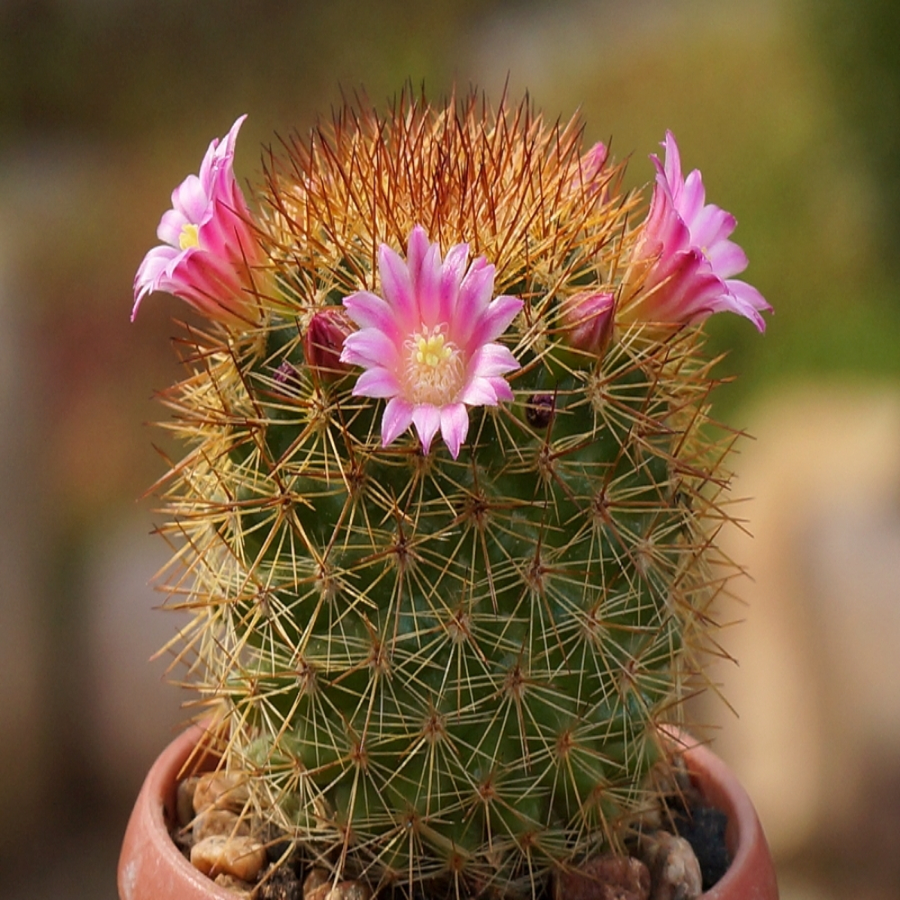

Мамамилирия
Впервые маммиллярия была описана Карлом Линнеем под названием Cactus mammillaris в 1753 году в труде Species plantarum. В 1812 году британский исследователь кактусов Адриан Хэуорт, основываясь на виде Cactus mammillaris, описал род Mammillaria и включил в него 5 видов. Название рода происходит от написания лат. mamilla — сосо́к, что указывало на сосочковатость стеблей — одну из отличительных особенностей растений. Таким образом, с точки зрения орфографии название Mammillaria с двумя «m» неправильное, но в 1930 г. оно было внесено в список консервируемых названий родов.
Большинство видов маммиллярий обитают в Мексике, но некоторые виды растут на юге США, в Вест-Индии, Колумбии, Венесуэле, Гватемале и Гондурасе.
Род Mammillaria объединяет большое количество разнообразных по внешнему строению и экологическим требованиям растений, многие специалисты по-разному рассматривали его объем и классификацию: выделялись разные количества таксонов внутриродового ранга (подроды, секции, серии); какие-то виды то выделялись в самостоятельные роды, то снова включались в род маммиллярия.
Колючки очень разнообразны по количеству, цвету, толщине, строению. У большинства видов есть как радиальные, так и центральные колючки. Радиальные колючки обычно тоньше, короче и светлее центральных. Есть виды без центральных колючек (Mammillaria egregia, Mammillaria herrerae), очень редко у взрослых растений нет радиальных колючек, есть виды со слабо различающимися между собой радиальными и центральными колючками. Центральные колючки бывают прямые, изогнутые, у ряда видов - с крючковидными кончиками.